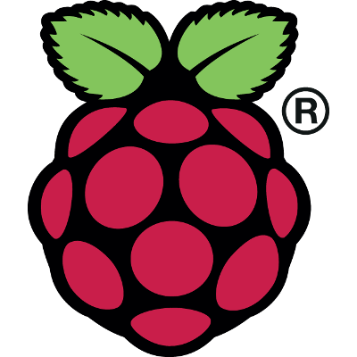

License
Attract-Mode is licensed under the terms of the GNU General Public License v3.
Downloads

Windows Vista, 7, 8, 10:
Windows XP:
(FFmpeg ended Windows XP support after version 3.4).
|
|
|
|
Linux:
Instructions for compiling Attract-Mode are available here, as well as on the wiki.
|
|

Raspberry Pi:
Attract-Mode is available in RetroPie as an experimental package.
Unofficial Images:
|
|
Source Code - Latest Release:
Instructions for compiling Attract-Mode are available here, as well as on the wiki.
|
|
Click here for older releases
Intro Video